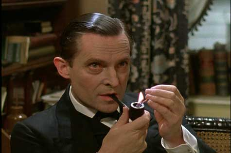

Bienvenue sur ma page HTML !
👋 Hi, I’m Ehsan
👀 I’m interested in Theater, Cinema and
Acting.
🌱
I’m currently learning Multilingual Communication Technology.
💞️ I’m looking to collaborate on how to
get
busy living.
📫 How to reach me: ehsan_hajiani@hotmail.com
😄 Pronouns: He, Him, Himself
⚡ Fun
fact: I am a Man for All Seasons...
My work experiences from 2006 to
2023
-Content Producer and Translator,
-Accounting Assisstant,
-Military Service Soldier,
-Notary Employee,
-Office Clerk
My academic studies during 2002 to 2023
Economics (Associate's Degree),
French Translation (Bachelor's),
General Linguistics (Master's),
And now studying for a Master’s in Multilingual Communication Technology at the Faculty of
Translation and Interpretation, University of Geneva (starting autumn 2023)
I have some knowledge of:
Persian: my mother tongue
and according to Common European Framework of Reference for Languages:
English: C1 level
French: B2 level
Italian: B1 level
German: B1 level
Latin: A1 level
Arabic: A2 level
Some of the creative arts and hobbies:
I have participated in some amateur camera and stage performing arts and acting projects
I have participated also in a professional theater project:
Theater
I have a little part in an Iranian television series:
Television
also participated in a television commercial (2017)
sing and play some Iranian traditional musical instruments
I like reading many genres like philosophy, sociology, history, novels and …
I spend at least three times a weeks doing some sportive activity and exercise
As a fervent admirer of the brilliant detective Sherlock Holmes, my fascination with his unparalleled intellect and deductive prowess knows no bounds. Immersing myself in the intricate mysteries penned by Sir Arthur Conan Doyle, I find myself captivated by each enigma Holmes unravels with meticulous precision. Being a Sherlockian isn't merely a hobby; it's a passion that permeates every aspect of my life. From eagerly dissecting the intricate plots of Doyle's stories to engaging in spirited discussions with fellow enthusiasts, I find immense joy in exploring the intricate world of 221B Baker Street.
